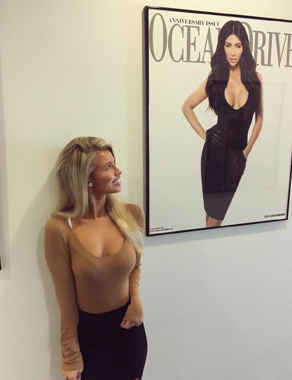
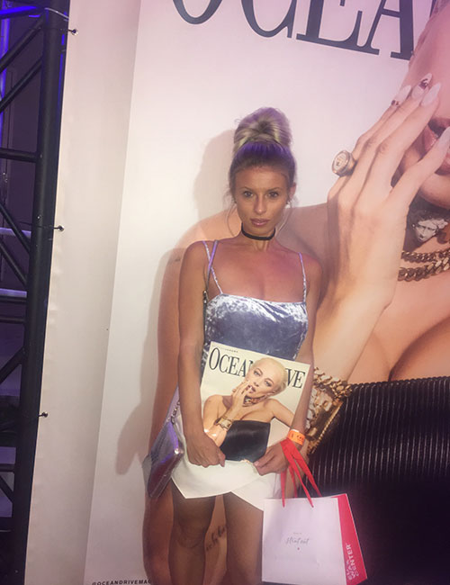
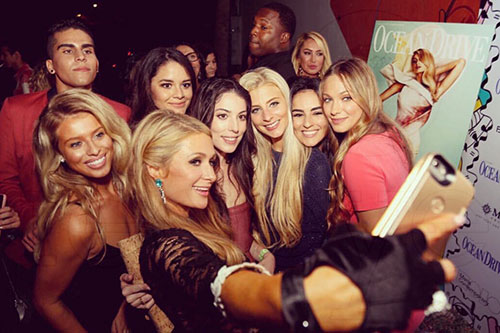

Experience
Edgar Snyder & Associates
Firm Services Intern
May 2018-January 2019
- Handled confidential office matters, including mail distribution, shredding sensitive documents, and meeting invitiations
- Engaged in basic firm activities such as legal research and policy drafting
- Assisted in the preparation of formal firm presentations
Ocean Drive Magazine
Editorial Intern
August 2017-January 2018
- Managed Twitter page by scheduling three tweets per day
- Fact checked names and article information
- Transcribed interviews up to 45 minutes long
- Worked special events
 
